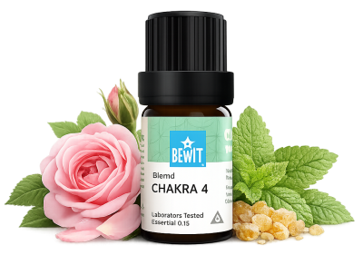

Jóga a čakry
pro harmonii těla, dechu a mysli
Esenciální oleje a jóga sdílejí společný jazyk — přítomnost, dech a propojení se sebou. Vůně prohloubí vaši praxi, pomohou naladit konkrétní čakru a podpoří tok energie celým tělem.

pro harmonii těla, dechu a mysli
Esenciální oleje a jóga sdílejí společný jazyk — přítomnost, dech a propojení se sebou. Vůně prohloubí vaši praxi, pomohou naladit konkrétní čakru a podpoří tok energie celým tělem.

Směs věnovaná srdečnímu centru — otevírá srdce, podporuje soucit a vnitřní rovnováhu.
Ideální při józe zaměřené na dech, propojení a přijetí sebe sama.
💧 Jak použít: zředěný v nosném oleji (např. jojobový) nanes na hrudník nebo solar plexus před cvičením, nebo přidej 3–5 kapek do difuzéru.
Zjistit více →💧 Jak použít: zředěný v nosném oleji nanes na chodidla nebo zátylek. Difuzér: 3–5 kapek.
Chci se ukotvit💧 Jak použít: zředěný v nosném oleji nanes na spodní břicho. Difuzér: 3–5 kapek.
Chci otevřít emoce💧 Jak použít: zředěný v nosném oleji nanes na solar plexus. Difuzér: 3–5 kapek.
Chci posílit vůli💧 Jak použít: zředěný v nosném oleji nanes na krk a hrudník. Difuzér: 3–5 kapek.
Chci najít hlas💧 Jak použít: zředěný v nosném oleji nanes jemně na čelo nebo spánky. Difuzér: 3–5 kapek.
Chci prohloubit intuici💧 Jak použít: přidej 3–5 kapek do difuzéru při meditaci nebo savasaně.
Chci propojeníVůně a dech jsou nejrychlejší cestou do přítomného okamžiku. Nechte esenci být součástí vašeho rituálu — před praxí, při ní nebo v závěrečné savasaně.
Mohlo by vás také zajímat:
🌿 Všechny esence, které na tomto webu doporučuji, jsou od BEWIT. Jako registrovaný zákazník můžete nakupovat se slevou až 50 % na vybrané produkty.
Registrace u BEWIT zdarma →